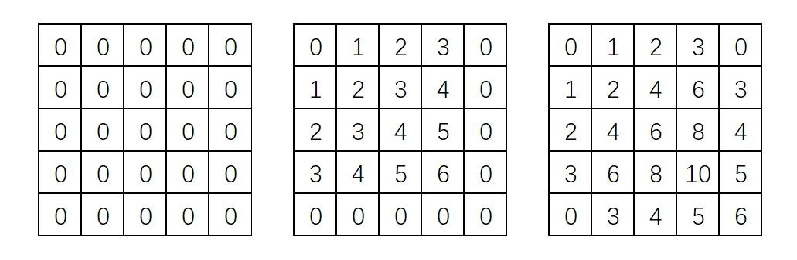
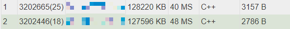
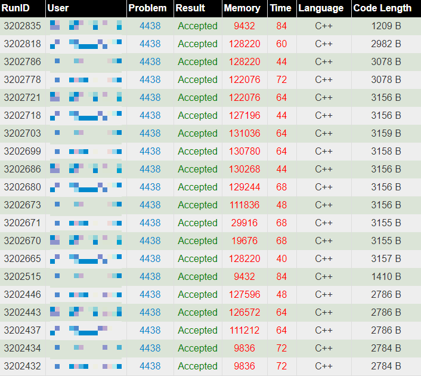
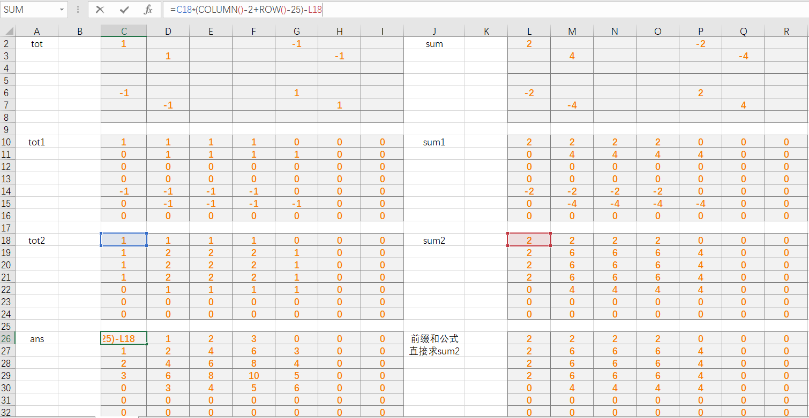
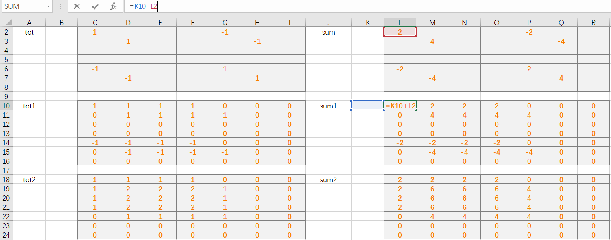

Submit: 171 Solved: 52
Description
在平面上，坐标（x1, y1）的点P1与坐标（x2, y2）的点P2的曼哈顿距离为：|x1-x2|+|y1-y2|。 现在有一个nXn (1<=n<=1000)的矩阵，一开始矩阵中每个元素的值都为零。 对这个矩阵进行m (1<=m<=100000)次操作，每次操作定义如下：
(x1, y1), (x2, y2): 对于矩阵中满足x1<=x<=x2, y1<=y<=y2的所有元素(x, y)加上(x, y)与(x1, y1)的曼哈顿距离|x1-x|+|y1-y|
例如，当n=5，m=2，两组操作分别为(1, 1), (4, 4)和(2, 2), (5, 5):

现在想让你输出m次操作后的矩阵，但是由于本OJ输出文件不能超过1M，所以输出矩阵所有非零元素的乘积即可 （结果对1000000007取余）,没有非零项则输出0；
Input
第一行两个整数n， m，分别表示正方形网格的边长和操作次数；
接下来m行，每行4个整数x1 y1 x2 y2；
Output
输出一个整数代表答案。
Sample Input
5 2
1 1 4 4
2 2 5 5
Sample Output
853543927
思路：首先要会差分标记，然后会求前缀和，这里放2个链接
https://blog.csdn.net/k_r_forever/article/details/81775899
https://www.cnblogs.com/OIerShawnZhou/p/7348088.html
然后做的时候建立2个差分数组，一个记录每次要加的最小值，也就是1；一个记录要加的最大值，也就是加到多少为止，为x1+y1那么多。理由我代码里讲。
闲话：这道题可以说是被我和申屠一起玩坏了，先放几张图片


看看这满满一页的提交，看看这内存占用的。。。就快爆128MB了。。。而且我们感觉占用110MB内存和116MB内存速度就是2个差别，所以要压力测试，使劲爆！（这样才会快点#手动滑稽）
代码
先放一份不那么反人类的吧。。。
AC 8776kb 92ms C1
2
3
4
5
6
7
8
9
10
11
12
13
14
15
16
17
18
19
20
21
22
23
24
25
26
27
28
29
30
31
32
33
34
35
36
37
38
39
40
41
42
43
44
45
46
47
const int mod=1000000007;
int cf[1003][1003];//差分数组一号，记录最小差分值
int cf2[1003][1003];//差分数组二号，记录最大差分值
long long ans=1;
int flag=0;
int main()
{
int n,m,a,b,c,d,dif,now;
scanf("%d%d",&n,&m);
while (m--)
{
scanf("%d%d%d%d",&a,&b,&c,&d);
cf[a][b]+=1;
cf[c+1][d+1]+=1;
cf[a][d+1]-=1;
cf[c+1][b]-=1;//二维差分的标记方法，使(a,b)到(c,d)这整块上的值都+1
dif=a+b;
cf2[a][b]+=dif;
cf2[c+1][d+1]+=dif;
cf2[a][d+1]-=dif;
cf2[c+1][b]-=dif;//使(a,b)到(c,d)这整块上的值都+dif
}
for (int i=1;i<=n;i++)
{
for (int j=1;j<=n;j++)
{
cf[i][j]+=cf[i][j-1]+cf[i-1][j]-cf[i-1][j-1];
cf2[i][j]+=cf2[i][j-1]+cf2[i-1][j]-cf2[i-1][j-1];//差分求前缀和的公式，a[i][j]+=a[i][j-1]+a[i-1][j]-a[i-1][j-1]+cf[i][j]，这里因为a矩阵初始值都是0，而且前缀和只需最后的时候求一遍，所以这题可以直接用cf数组充当a数组来存储前缀和，就相当于cf[i][j]=cf[i][j-1]+cf[i-1][j]-cf[i-1][j-1]+cf[i][j]，即上面的式子，省了一些内存。。。（）
}
}
for (int i=1;i<=n;i++)
{
for (int j=1;j<=n;j++)
{
now=cf[i][j]*(i+j)-cf2[i][j];//下面将解释为什么上面的cf2是加上(x1+y1)，这里为什么是这样乘起来计算
if (now)
{
flag=1;
ans=ans*now%mod;
}
}
}
if (flag) printf("%lld\n",ans);
else printf("0\n");
return 0;
}
原因：看下面这图，只需看tot2和sum2。假设他的左上角的点为(a,b)，a=1，b=1，假设有一点(x,y)，x=3，y=5，注意这里的坐标都是以绝对坐标为准（即以(0,0)点为原点），那么cf[i][j]=1，cf2[i][j]=a+b=2，则cf[i][j] * (i+j) - cf2[i][j] = 1 * (3+5) - (1+1) = 6 = (x-a) + (y-b)，[x>a且y>b] ，分配一下就可以看出其实这个式子是会算出(x,y)离(a,b)点多远，相当于题目里的这个|x1-x|+|y1-y|。
好，如果是叠了2层，一样的，那假设有2个左上角的点分别为(a1,b1)，(a2,b2)，有一点(x,y)，那就是cf[i][j] * (i+j) - cf2[i][j] = 2 *(x+y) - (a1+b1+a2+b2) = (x-a1) + (y-b1) + (x-a2) + (y-b2)，所以是一样的，没什么区别。。。很easy的道理，而且可以保证的是，如果有cf[i][j]的值那(i,j)的点一定比左上角的(a,b)点大。。。

然后下面是我的反人类代码，使用了快读fread()，原理是把数据先全读到缓冲区，然后再通过字符读取数据
AC 127596kb 48ms C++1
2
3
4
5
6
7
8
9
10
11
12
13
14
15
16
17
18
19
20
21
22
23
24
25
26
27
28
29
30
31
32
33
34
35
36
37
38
39
40
41
42
43
44
45
46
47
48
49
50
51
52
53
54
55
56
57
58
59
60
61
62
63
64
65
66
67
68
69
70
71
72
73
74
75
76
77
78
79
80
81
82
83
84
85
86
87
88
89
90
91
92
93
94
95
const int mod=1000000007;
int cf[1002][1002];
int cf2[1002][1002];
long long ans=1;
int flag=0;
namespace IO {
const int MT = 116 * 1024 * 1024;//这里是116MB
char IO_BUF[MT];
int IO_PTR, IO_SZ;
void begin() {
IO_PTR = 0;
IO_SZ = fread (IO_BUF, 1, MT, stdin);
}
template<typename T>
inline bool scan_d (T & t) {
while (IO_PTR < IO_SZ && IO_BUF[IO_PTR] != '-' && (IO_BUF[IO_PTR] < '0' || IO_BUF[IO_PTR] > '9'))
IO_PTR ++;
if (IO_PTR >= IO_SZ) return false;
bool sgn = false;
if (IO_BUF[IO_PTR] == '-') sgn = true, IO_PTR ++;
for (t = 0; IO_PTR < IO_SZ && '0' <= IO_BUF[IO_PTR] && IO_BUF[IO_PTR] <= '9'; IO_PTR ++)
t = t * 10 + IO_BUF[IO_PTR] - '0';
if (sgn) t = -t;
return true;
}
inline bool scan_s (char s[]) {
while (IO_PTR < IO_SZ && (IO_BUF[IO_PTR] == ' ' || IO_BUF[IO_PTR] == '\n') ) IO_PTR ++;
if (IO_PTR >= IO_SZ) return false;
int len = 0;
while (IO_PTR < IO_SZ && IO_BUF[IO_PTR] != ' ' && IO_BUF[IO_PTR] != '\n')
s[len ++] = IO_BUF[IO_PTR], IO_PTR ++;
s[len] = '\0';
return true;
}
template<typename T>
void print(T x) {
static char s[33], *s1; s1 = s;
if (!x) *s1++ = '0';
if (x < 0) putchar('-'), x = -x;
while(x) *s1++ = (x % 10 + '0'), x /= 10;
while(s1-- != s) putchar(*s1);
}
template<typename T>
void println(T x) {
print(x); putchar('\n');
}
};
using namespace IO;//要写上这个
int main()
{
begin();//还有这个
int n,m,a,b,c,d,dif,now;
scan_d(n);
scan_d(m);
while (m--)
{
scan_d(a);
scan_d(b);
scan_d(c);
scan_d(d);
cf[a][b]+=1;
cf[c+1][d+1]+=1;
cf[a][d+1]-=1;
cf[c+1][b]-=1;
dif=a+b;
cf2[a][b]+=dif;
cf2[c+1][d+1]+=dif;
cf2[a][d+1]-=dif;
cf2[c+1][b]-=dif;
}
for (int i=1;i<=n;i++)
{
for (int j=1;j<=n;j++)
{
cf[i][j]+=cf[i][j-1]+cf[i-1][j]-cf[i-1][j-1];
cf2[i][j]+=cf2[i][j-1]+cf2[i-1][j]-cf2[i-1][j-1];
}
}
for (int i=1;i<=n;i++)
{
for (int j=1;j<=n;j++)
{
now=cf[i][j]*(i+j)-cf2[i][j];
if (now)
{
flag=1;
ans=ans*now%mod;
}
}
}
if (flag) print(ans);
else print(0);
return 0;
}
这里还有一份官方另一份就不放了，x和y两个数组搞来搞去看都看不懂1
2
3
4
5
6
7
8
9
10
11
12
13
14
15
16
17
18
19
20
21
22
23
24
25
26
27
28
29
30
31
32
33
34
35
36
37
38
39
40
41
42
43
44
45
46
47
48
49
50
51
52
53
54
55
56
57
58
59
60
61
62
63
64
65
66
67
68
69
70
71
72
73
74
75
using namespace std;
typedef long long LL;
const int N = 1e3 + 10;
const int mod = 1e9 + 7;
char fre[10] = "data1.in";
char fot[20] = "data1.out";
int tot[N][N];
int sum[N][N];
void solve(){
int n, m, u, l, d, r;
scanf("%d%d", &n, &m);
memset(tot, 0, sizeof tot);
memset(sum, 0, sizeof sum);
for(int i = 1; i <= m; ++i){
scanf("%d%d%d%d", &u, &l, &d, &r);
sum[u][l] += (u + l);
sum[u][r + 1] -= (u + l);
sum[d + 1][l] -= (u + l);
sum[d + 1][r + 1] += (u + l);
tot[u][l] ++;
tot[u][r + 1] --;
tot[d + 1][l] --;
tot[d + 1][r + 1] ++;
}
for(int i = 1; i <= n; ++i){
for(int j = 1; j <= n; ++j){
sum[i][j] += sum[i][j - 1];
tot[i][j] += tot[i][j - 1];
printf("%d ",sum[i][j]);
}
printf("\n");
}
for(int i = 1; i <= n; ++i){
for(int j = 1; j <= n; ++j){
sum[i][j] += sum[i - 1][j];
tot[i][j] += tot[i - 1][j];//他这里没有用二维前缀和的公式，而是一步一步求，具体过程可以看上面那张表格，我也放在文末了
}
}
LL ans = 1, now = 0;
bool flag = false;
for(int i = 1; i <= n; ++i){
for(int j = 1; j <= n; ++j){
now = tot[i][j] * (i + j) - sum[i][j];
//printf("%d ",now);
// sum[i][j] = 0, tot[i][j] = 0;
if(now) ans = ans * now % mod, flag = true;
}
//printf("\n");
}
if(!flag) ans = 0;
printf("%I64d\n", ans);
}
int main()
{
solve();
// int T = 6;
// for(int cas = 1; cas <= T; ++cas){
// fre[4] = ('0' + cas);
// fot[4] = ('0' + cas);
// freopen(fre, "r", stdin);
// freopen(fot, "w", stdout);
// solve();
// }
return 0;
}
/*
419683495
775697741
996935516
391348459
0
797953655
*/

Excel是个好东西，Excel大法好！！！